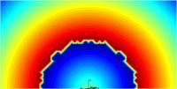

| Identifier | StepSize= | |
| Format | Floating point value | |
| Purpose | Step between contours | |
| Used in | Field | |
| See also | Field | |
StepSize= controls the size of contour-steps in Field displays.
StepSize= does not alter the mesh-density of field-calculation as given by Meshing-Parameters. It only controls the number of contours generated in-between field-points.
 |
|
| StepSize=10 | StepSize=30 |
For example
Field
RefNodes="NF"
EdgeLength=20mm
Sym=x
BodeType=Phase; StepSize=30; Range=360
102 2001 2002 2003 2004
In the above example, section Field renders the Phase-Response, to the left with StepSize=10 and to the right with StepSize=30. (The ornamental feature is an artifact of the contour engine, which is caused by the phase-jump at +/-180 degree).